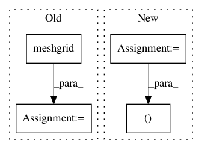

7d9352c7330d9c826c21c9e8f8cb4aee930037b5,GPy/kern/coregionalise.py,coregionalise,dK_dtheta,#coregionalise#Any#Any#Any#Any#,56
Before Change
index2 = index
else:
index2 = np.asarray(index2,dtype=np.int)
ii,jj = np.meshgrid(index,index2)
ii,jj = ii.T, jj.T
dL_dK_small = np.zeros_like(self.B)
for i in range(self.Nout):
After Change
}
}
N, M, Nout = index.size, index2.size, self.Nout
weave.inline(code, ["N","M","Nout","dL_dK","dL_dK_small","index","index2"])
dkappa = np.diag(dL_dK_small)
In pattern: SUPERPATTERN
Frequency: 3
Non-data size: 4
Instances
Project Name: SheffieldML/GPy
Commit Name: 7d9352c7330d9c826c21c9e8f8cb4aee930037b5
Time: 2013-04-28
Author: james.hensman@gmail.com
File Name: GPy/kern/coregionalise.py
Class Name: coregionalise
Method Name: dK_dtheta
Project Name: SheffieldML/GPy
Commit Name: 7d9352c7330d9c826c21c9e8f8cb4aee930037b5
Time: 2013-04-28
Author: james.hensman@gmail.com
File Name: GPy/kern/coregionalise.py
Class Name: coregionalise
Method Name: K
Project Name: scipy/scipy
Commit Name: 5ae662085c1ebae4a42808f1b0490b0065d2767b
Time: 2016-11-13
Author: person142@users.noreply.github.com
File Name: scipy/special/tests/test_mpmath.py
Class Name:
Method Name: test_loggamma_taylor2